Start with an empty prompt
Text field empty, defaults to English (US) / Ava, speed 1.00×, pitch 0. Notice the Generate button is already disabled — there's nothing to speak yet. (History already has entries here from earlier test runs against this same server.)
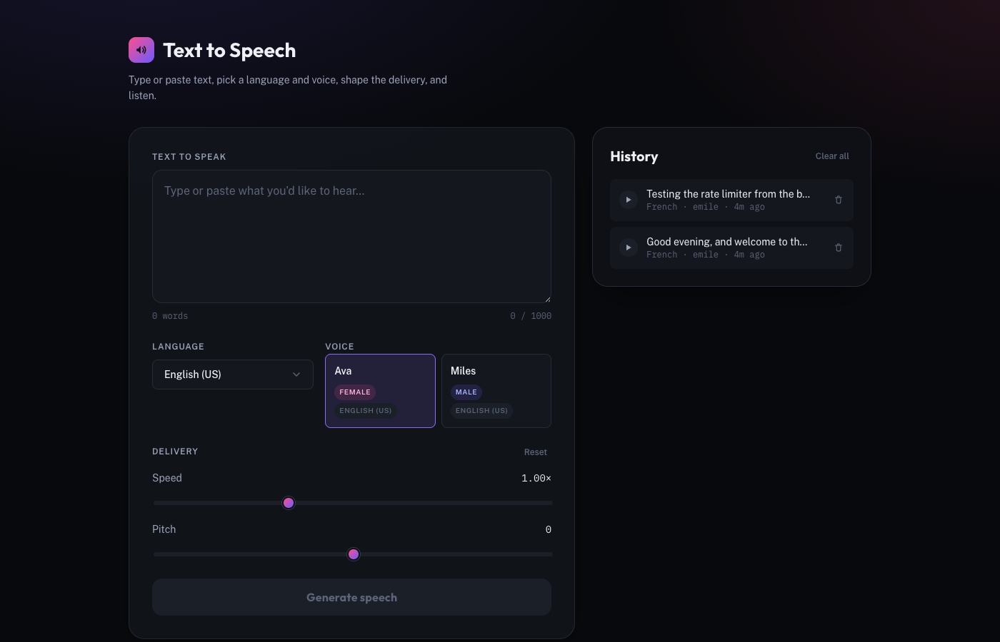
Type the text
Live character and word count update as you type, and the Generate button enables the moment there's real content.
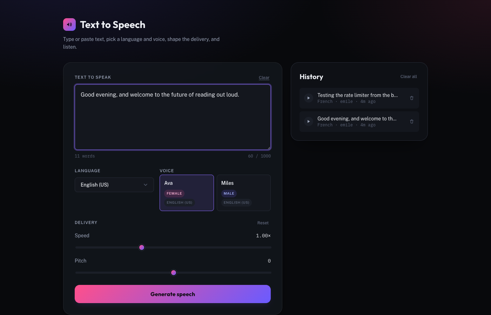
Switch to a non-default language
Selecting French refetches the voice catalog automatically — the voice list resets to the one voice available for that language (Émile).
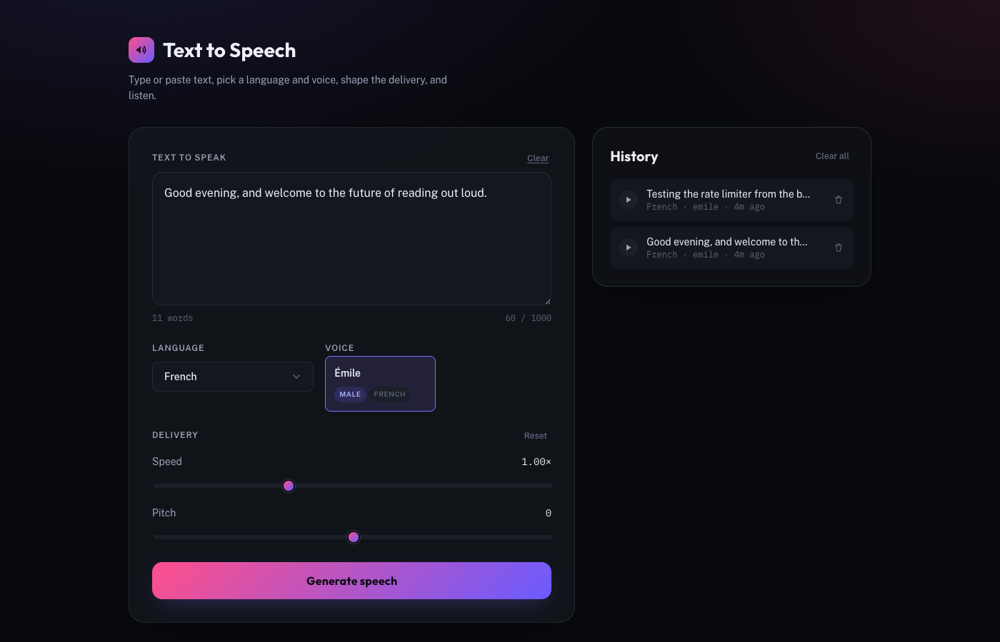
Shape the delivery
Speed pushed to 1.50× and pitch to +4 — both sliders show a live numeric readout as they move.
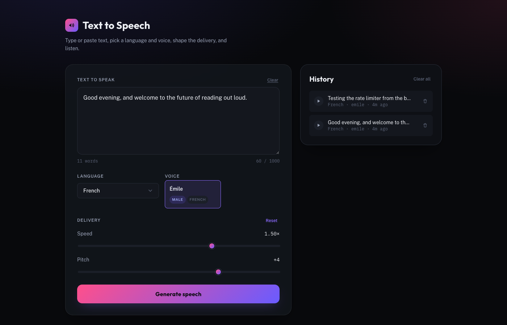
Generate speech
The request hits POST /api/tts, the server synthesizes and caches the result, and the custom audio player appears with a success toast.
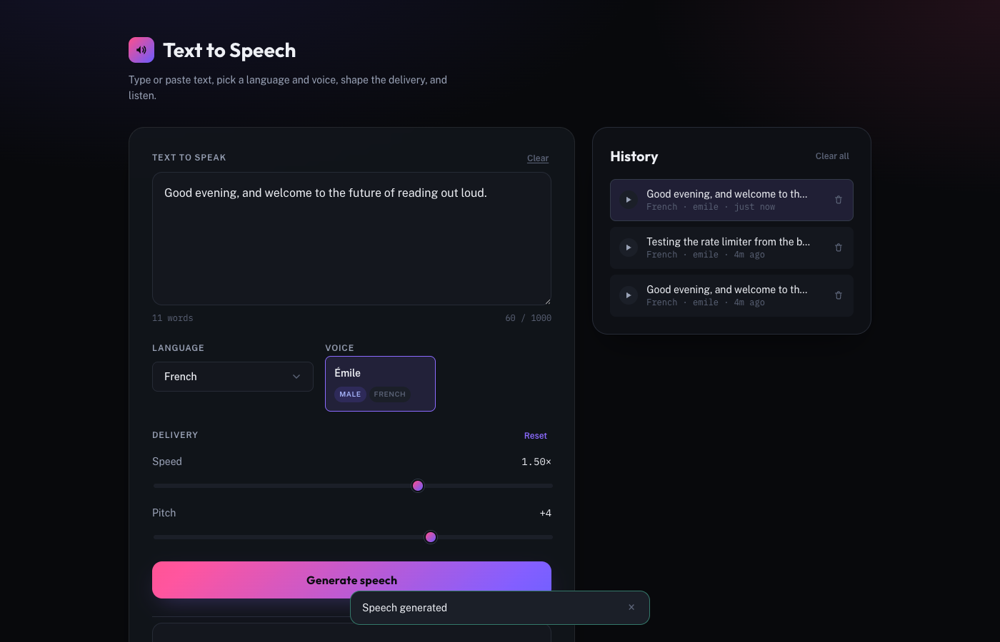
Play it back
Custom play/pause control — no bare <audio controls> — with the waveform reacting to actual playback via the Web Audio API.

Seek within the clip
Clicking the scrubber jumps playback to that point — elapsed time and the progress fill update immediately.
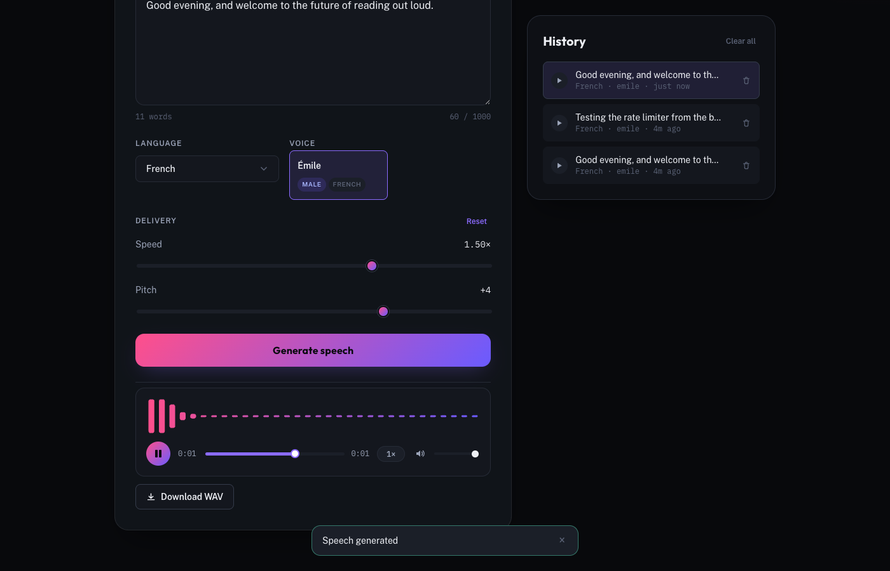
It lands in history
Every successful generation is persisted to SQLite and shows up immediately in the History panel.
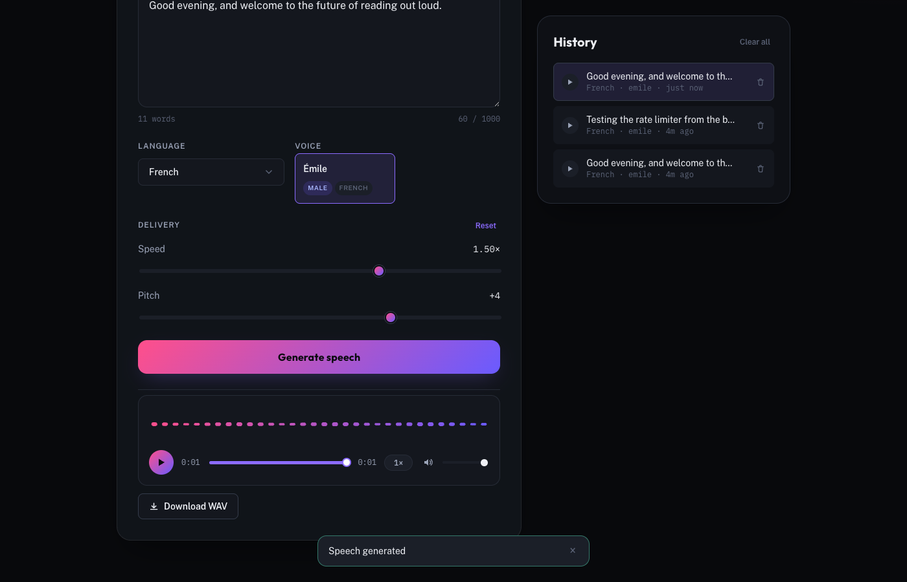
Replay from history
Clicking a past entry repopulates the form — text, language, and voice — and loads its audio straight into the player.
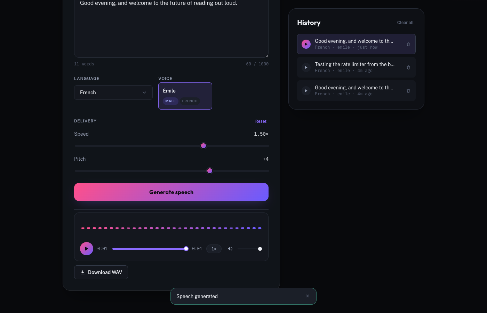
Clearing the text disables Generate
No server round-trip needed to catch this — the button disables the instant the input becomes invalid.
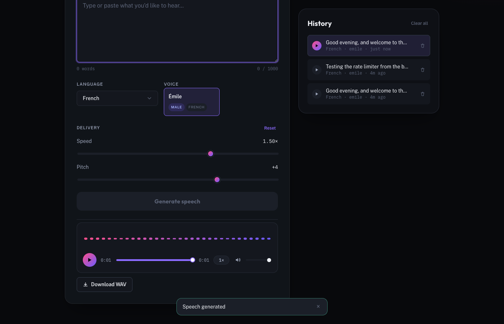
A real rate-limit error
Eleven genuine, sequential submissions in a row trip the server's 10-requests-per-minute limit — the eleventh comes back as a real 429, rendered through the same ErrorMessage component with a Retry action.
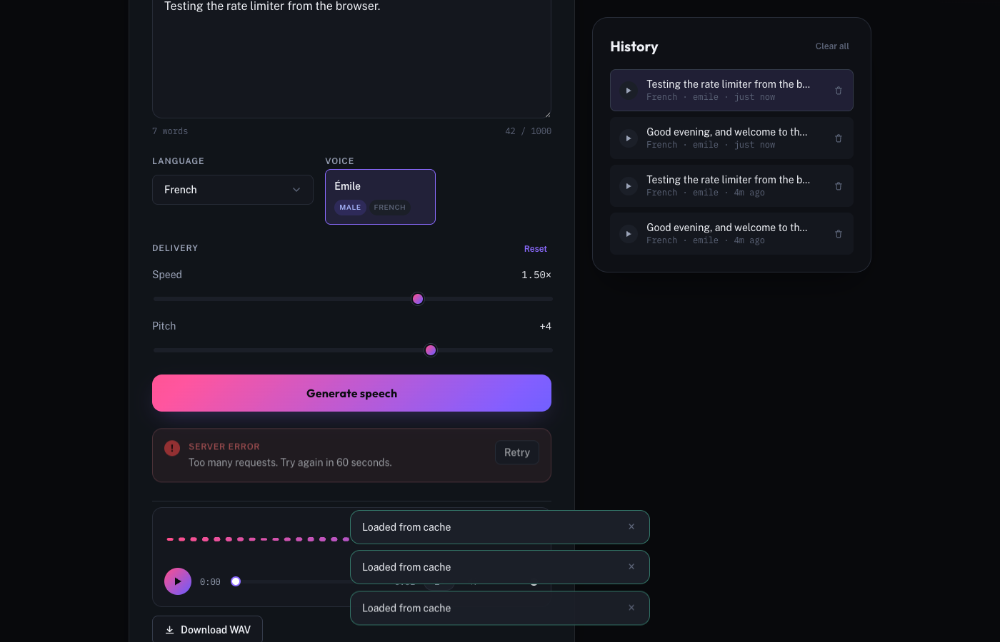
The same flow, on mobile
Single column at 375px, no horizontal scroll, full functionality — generation, playback, and history all work identically down to phone width.
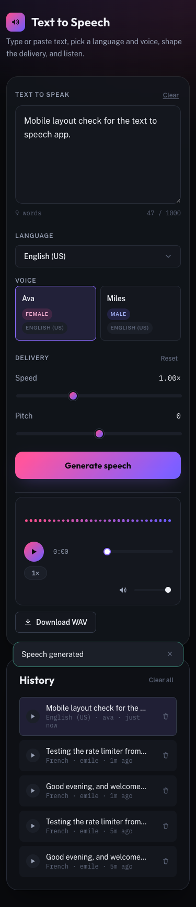